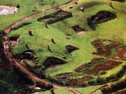
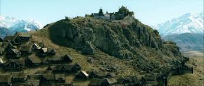

La Terre du Milieu, ou Endor, est le principal continent d'Arda créé par les Valar,
bordé du Belegaer (la Grande Mer ou Mer Occidentale) à l'ouest, et de la Mer Orientale à l'est.
Pour en découvrire plus, accédez au wiki ici.

